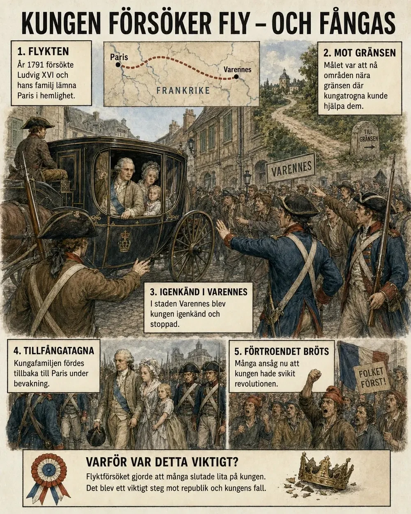
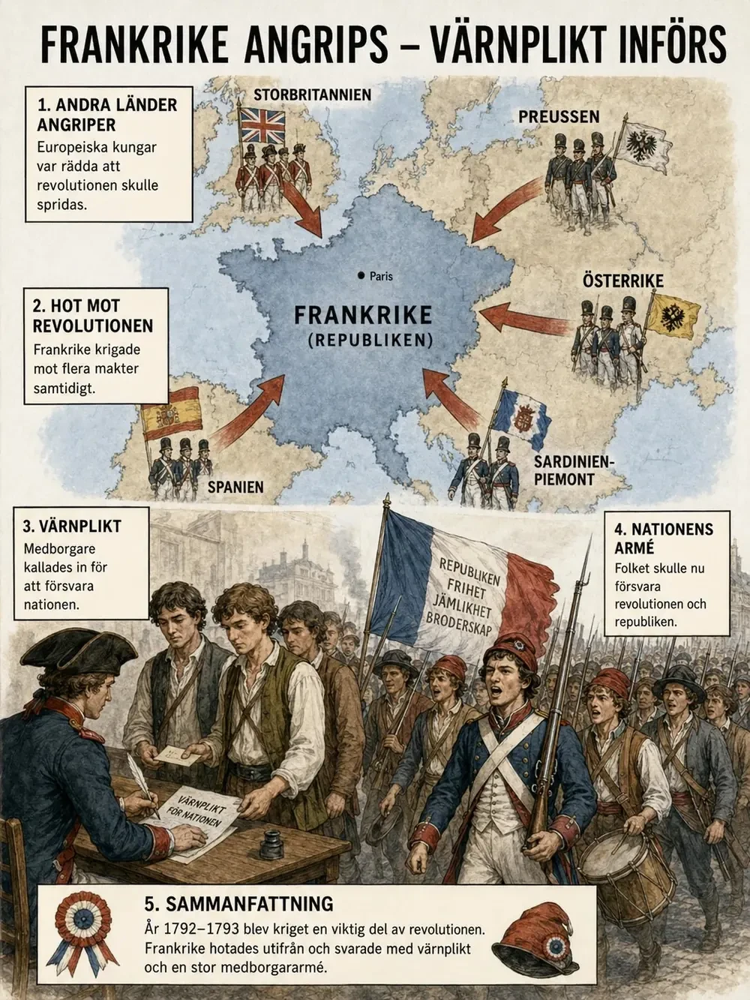
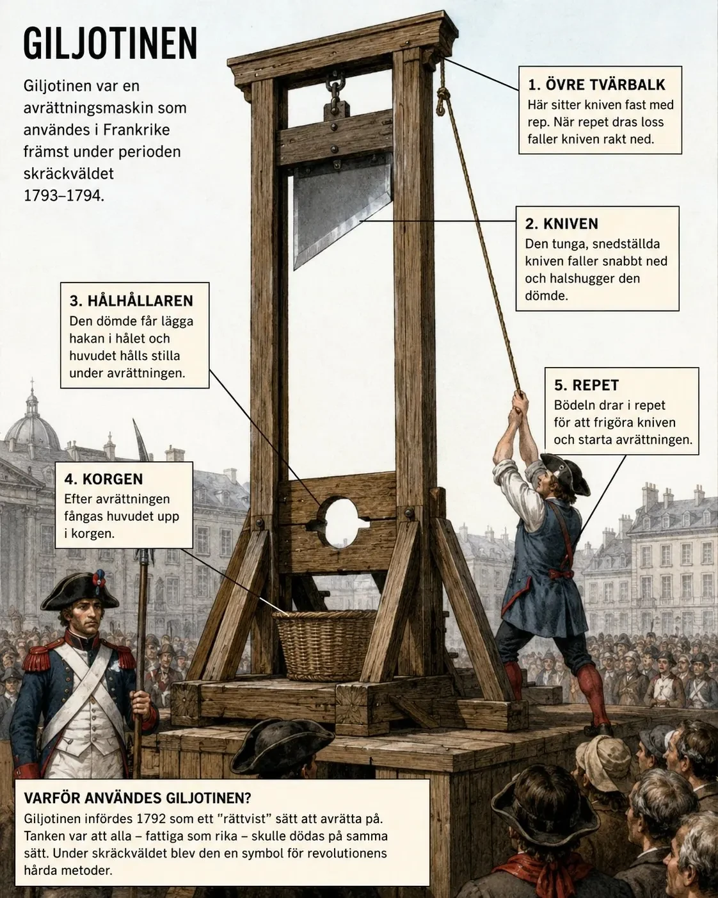

— när revolutionen radikaliserades: krig, kungamord och terror —
År 1791 försökte kung Ludvig XVI och hans familj fly från Paris. De ville nå soldater och adelsmän som var emot revolutionen. Men flykten misslyckades — kungen ignenkändes i Varennes och fördes tillbaka. Tilliten rasade. Många började kräva en republik — ett land utan kung.

Efter revolutionens början 1789 hade Frankrike förändrats mycket. Nationalförsamlingen hade avskaffat ståndssamhällets gamla privilegier och arbetade för att skapa ett nytt samhälle med en konstitution. Tanken var först inte att avskaffa kungamakten helt. Många ville att Frankrike skulle bli en konstitutionell monarki . Det betydde att kungen skulle finnas kvar, men att hans makt skulle begränsas av lagar och av en folkvald församling.
I det här temat ska vi se hur den planen brast. Förtroendet mellan kungen och revolutionen försvann. Frankrike hamnade i krig. Kungen avrättades. Och under några år vände revolutionen sig mot sig själv i det som kallas skräckväldet .
Tanken var först inte att avskaffa kungamakten helt. Många ville att Frankrike skulle bli en konstitutionell monarki . Det betydde att kungen skulle finnas kvar, men att hans makt skulle begränsas av lagar och av en folkvald församling.
Problemet var att många började tvivla på om kung Ludvig XVI verkligen stödde revolutionen. Han hade tidigare styrt som enväldig kung och många misstänkte att han egentligen ville återgå till det gamla samhället.
Misstankarna blev mycket starkare år 1791, när kungen och hans familj försökte fly från Paris. De ville ta sig till gränsområdena i öster, där det fanns soldater och adelsmän som var emot revolutionen. Flyktförsöket misslyckades. Kungen blev igenkänd i staden Varennes och fördes tillbaka till Paris.
Efter detta blev Frankrike allt mer splittrat. Vissa menade att man borde behålla kungen, eftersom landet behövde ordning och stabilitet. De var rädda för att revolutionen annars skulle gå för långt och leda till kaos. Andra menade att kungen hade svikit folket. Om han försökte fly från sitt eget land kunde han inte längre ses som en pålitlig ledare. Fler och fler började därför kräva att monarkin skulle avskaffas och att Frankrike skulle bli en republik, alltså ett land utan kung.
Efter revolutionens första år fanns det fortfarande många i Frankrike som tänkte sig att landet kunde styras av en kung, men på ett nytt sätt. Målet för många revolutionärer var inte från början att avskaffa monarkin helt, utan att skapa en konstitutionell monarki . Det betydde att kungen skulle vara kvar som statschef, men att hans makt skulle begränsas av en konstitution, alltså en grundlag som bestämde hur landet skulle styras. Den politiska makten skulle inte längre bygga på kungens påstådda rätt från Gud, utan på lagar, folkrepresentation och medborgarnas rättigheter.
Men kung Ludvig XVI blev ett allt större problem för revolutionen. Många misstänkte att han egentligen inte accepterade förändringarna. För honom och drottning Marie-Antoinette innebar revolutionen att kungamakten försvagades, att adelns privilegier hotades och att kyrkans gamla ställning i samhället bröts ned. När kungen sommaren 1791 försökte fly från Paris tillsammans med sin familj blev misstankarna mycket starkare. Flyktförsöket brukar kallas flykten till Varennes , eftersom kungafamiljen blev igenkänd och stoppad i staden Varennes nära den östra gränsen.
Flyktförsöket blev en politisk katastrof för kungen. Många frågade sig varför en kung som påstod sig vara Frankrikes ledare försökte lämna landet. För revolutionens motståndare kunde flykten tolkas som ett försök att rädda kungafamiljen från kaoset i Paris. Men för många revolutionärer blev flykten ett bevis på att kungen var illojal mot nationen. Han sågs inte längre som en samlande ledare, utan som en möjlig förrädare .
Efter flykten växte motsättningen mellan dem som ville behålla kungen och dem som ville avskaffa monarkin. De mer försiktiga revolutionärerna, ofta ur borgerskapet, menade att Frankrike behövde stabilitet. De ville skydda revolutionens viktigaste reformer, men samtidigt undvika att landet drogs in i våld och oordning. De mer radikala grupperna menade däremot att revolutionen inte kunde bli fullständig så länge kungen fanns kvar. För dem var monarkin en symbol för envälde, ståndssamhälle och privilegier. De började i stället kräva att Frankrike skulle bli en republik , alltså en stat utan kung där makten skulle utgå från folket.
Här märks en viktig förändring i revolutionen. Den första fasen hade handlat om att begränsa kungamakten och avskaffa privilegiesamhället. Den andra revolutionen kom att handla om något mer radikalt: att ta bort kungen helt och bygga ett nytt politiskt system där nationen och folket stod över monarkin.
År 1792 gick Frankrike i krig mot Österrike och Preussen. Europeiska kungar var rädda att revolutionens idéer skulle spridas. Kriget gjorde situationen allvarligare. För att försvara landet infördes värnplikt — medborgare kunde tvingas göra militärtjänst. Nu sågs kriget som folkets eget krig för att försvara nationen och revolutionen.

Samtidigt som Frankrike var splittrat inifrån ökade hotet utifrån . Flera kungar och furstar i Europa var oroliga över utvecklingen i Frankrike. De var rädda för att revolutionens idéer om frihet, jämlikhet och folkets makt skulle spridas till deras egna länder . Om folket i Frankrike kunde avsätta en kung, kanske människor i andra länder också skulle börja kräva förändring.
År 1792 gick Frankrike i krig mot Österrike och Preussen . Senare anslöt sig också Storbritannien, Spanien och Sardinien-Piemonte. Kriget gjorde situationen ännu mer allvarlig. Många fransmän upplevde att revolutionen var hotad både av utländska arméer och av fiender inne i landet.
De som var emot revolutionen kunde misstänkas samarbeta med Frankrikes fiender. Sådana människor anklagades för kontrarevolution, alltså försök att stoppa revolutionen och återställa det gamla samhället.
För att försvara landet behövde Frankrike många soldater. Därför infördes värnplikt, vilket betydde att medborgare kunde tvingas göra militärtjänst och försvara nationen.
Detta var något nytt och viktigt. Förr hade krig ofta förts av kungens yrkessoldater, men nu skulle folket självt försvara revolutionen och landet. Att vara medborgare betydde inte bara att ha rättigheter, utan också att ha skyldigheter mot staten och nationen.
När landet hotades blev kraven hårdare, misstänksamheten större och våldet vanligare. Kriget bidrog därför till att revolutionen blev mer radikal . Det är just denna stämning som senare gör skräckväldet möjligt.
Samtidigt som Frankrike blev allt mer splittrat inifrån ökade hotet från andra länder. De europeiska kungahusen följde utvecklingen i Frankrike med oro. Om franska revolutionärer kunde tvinga sin kung att dela makten, avskaffa privilegier och tala om folkets rättigheter, kunde liknande idéer spridas till andra länder. Revolutionen var därför inte bara ett franskt problem. Den hotade hela den gamla europeiska ordningen , där kungar, adel och kyrka hade haft stor makt.
År 1792 gick Frankrike i krig mot bland annat Österrike och Preussen. Kriget blev mycket viktigt för revolutionens utveckling. När landet hamnade i krig började revolutionärerna beskriva situationen som ett försvar av själva nationen . Det handlade inte längre bara om politiska reformer inne i Frankrike, utan om att försvara revolutionen mot yttre fiender. Begreppet nation blev därför centralt. Nationen sågs inte längre som kungens rike, utan som medborgarnas gemensamma land .
Kriget gjorde misstänksamheten större. Om Frankrike hotades av utländska arméer, kunde personer inne i landet som kritiserade revolutionen anklagas för att hjälpa fienden. Särskilt adelsmän, präster som motsatte sig revolutionen och kungatrogna grupper misstänktes för kontrarevolution , alltså försök att stoppa revolutionen och återställa det gamla samhället.
För att försvara republiken behövdes många soldater. Därför infördes en omfattande värnplikt . Värnplikt innebar att vanliga medborgare kunde kallas in till armén för att försvara landet. Detta var något nytt i europeisk historia. Tidigare hade krig ofta förts av kungens yrkessoldater eller inhyrda soldater, men nu skulle folket självt försvara nationen. Revolutionen skapade därmed en ny koppling mellan medborgarskap och militärt ansvar. Att vara medborgare betydde inte bara att ha rättigheter, utan också att ha skyldigheter mot staten och nationen.
Kriget bidrog också till att politiken blev mer radikal. När ett land befinner sig i krig blir kraven på snabbhet, lydnad och enighet ofta starkare. Det blev svårare att acceptera politisk oenighet. Den som var emot revolutionens ledare kunde lätt beskrivas som ett hot mot hela landet. På så sätt bidrog kriget till att skapa den hårda politiska stämning som senare ledde fram till skräckväldet.
När kriget gick dåligt ökade ilskan mot kungen. Många misstänkte att Ludvig XVI hoppades att Frankrikes fiender skulle vinna. 1792 stormade folkmassor kungens palats. Monarkin avskaffades. I januari 1793 avrättades Ludvig XVI med giljotin . Frankrike hade inte bara begränsat kungens makt — man hade dömt och dödat sin kung. Det fanns ingen väg tillbaka.

När kriget gick dåligt ökade ilskan mot kungen. Många misstänkte att Ludvig XVI hoppades att Frankrikes fiender skulle vinna kriget och hjälpa honom att få tillbaka sin gamla makt.
När folkmassor stormade kungens palats i Paris 1792 förlorade han den makt han hade kvar. Monarkin avskaffades och Frankrike blev republik.
Kungen ställdes inför rätta. Han anklagades för förräderi mot nationen. Frågan var mycket känslig. Vissa tyckte att han borde få leva, eftersom en avrättning kunde skapa ännu större oro och göra andra länder ännu mer fientliga mot Frankrike. Andra menade att revolutionen aldrig kunde vara säker så länge kungen levde. För dem blev kungen en symbol för det gamla samhället, enväldet och adelns privilegier.
Det fanns nu ingen väg tillbaka till den gamla kungamakten. Frankrike hade inte bara begränsat kungens makt, utan dömt och dödat sin kung . För Europas andra kungar var detta mycket skrämmande. För många revolutionärer var det däremot ett bevis på att folket nu hade tagit makten över landet.
När Frankrike gick dåligt i kriget ökade ilskan mot kungen ytterligare. Många misstänkte att Ludvig XVI hoppades att Österrike och Preussen skulle besegra revolutionärerna och hjälpa honom att återfå sin gamla makt. Misstankarna förstärktes av att drottning Marie-Antoinette kom från den österrikiska kejsarfamiljen. För många revolutionärer blev kungafamiljen därför en symbol för samarbete med utländska fiender.
År 1792 stormades kungens palats, Tuilerierna , av revolutionära folkmassor i Paris. Kungen förlorade då den makt han hade kvar. Monarkin avskaffades och Frankrike utropades till republik. Det var ett mycket stort steg. I stället för att försöka reformera kungamakten valde revolutionärerna nu att avskaffa den helt .
Kungen ställdes inför rätta och anklagades för högförräderi mot nationen. Rättegången var inte bara juridisk, utan också symbolisk. Frågan var vad man skulle göra med en kung i ett samhälle som inte längre erkände kungamaktens gamla grund. Om folket var suveränt , alltså den högsta makten i samhället, kunde en kung då stå över folket? Revolutionärerna svarade nej. Ludvig XVI dömdes till döden.
I januari 1793 avrättades han med giljotin. Avrättningen blev en avgörande vändpunkt. Den visade att revolutionen hade brutit fullständigt med den gamla ordningen. Det fanns inte längre någon möjlighet att enkelt återgå till en konstitutionell monarki. Genom att avrätta kungen markerade revolutionärerna att folkets suveränitet stod över kungens makt .
Men avrättningen skapade också nya problem. För Europas kungar blev den ett skrämmande exempel på hur långt revolutionära idéer kunde gå. Flera länder gick hårdare emot Frankrike. Inne i Frankrike blev konflikten också värre. Vissa såg kungens död som nödvändig för att rädda revolutionen. Andra såg den som ett tecken på att revolutionen hade gått för långt. Därför fördjupades splittringen mellan revolutionens olika grupper.
Landet var i krig, ekonomin dålig och det fanns uppror inne i Frankrike. Revolutionens ledare skapade Välfärdsutskottet med mycket stor makt. Ledaren var Maximilien Robespierre . Han menade att revolutionens fiender måste stoppas hårt.
Perioden 1793–1794 kallas skräckväldet . Människor anklagades för att vara revolutionens fiender — en anklagelse var nästan dömsats. Giljotinen blev symbolen för revolutionens våld. Det här visar en viktig motsats: revolutionen började med idéer om frihet och rättigheter — men under krig och kris användes tvång och terror.
Efter kungens avrättning blev situationen i Frankrike ännu mer kaotisk. Landet låg i krig med flera europeiska makter. Ekonomin var dålig, matpriserna var höga och det fanns uppror på flera platser i landet. Revolutionens ledare menade att republiken var i livsfara .
För att kunna styra landet mer effektivt skapades ett mäktigt organ som kallades Välfärdsutskottet.
Trots namnet handlade det inte om välfärd på samma sätt som vi ofta menar i dag, alltså skola, sjukvård och social trygghet. Ordet betydde snarare att utskottet skulle rädda nationen och skydda republikens överlevnad. Välfärdsutskottet fick mycket stor makt och kunde fatta snabba beslut i krigets och revolutionens namn.
En av de mest kända ledarna i Välfärdsutskottet var Maximilien Robespierre. Han och andra radikala revolutionärer menade att revolutionens fiender måste bekämpas hårt .
De ansåg att frihet och jämlikhet inte kunde skapas om förrädare, kungatrogna och motståndare fick sabotera revolutionen. Därför började staten använda mycket hårda metoder för att kontrollera befolkningen.
Perioden 1793–1794 brukar kallas skräckväldet. Det var en tid då revolutionens ledare använde terror, rädsla, kontroll och våld för att försvara republiken.
Tanken var att alla som hotade revolutionen skulle stoppas. Problemet var att gränsen mellan verkliga fiender och misstänkta fiender blev allt otydligare .
Människor kunde anklagas för att vara emot revolutionen om de kritiserade ledarna, klagade på politiken eller misstänktes sympatisera med kungen. Många ställdes inför revolutionära domstolar . Straffen var ofta hårda och rättegångarna kunde gå snabbt.
Den mest kända avrättningsmetoden var giljotinen, en maskin som halshögg den dömde. Giljotinen hade från början setts som ett mer jämlikt och snabbt sätt att avrätta människor, eftersom samma metod användes oavsett samhällsklass. Under skräckväldet blev den i stället en symbol för revolutionens våld.
Skräckväldet visar en viktig motsättning i den franska revolutionen. Revolutionen hade börjat med idéer om frihet, rättigheter och folkets makt . Men när landet hamnade i krig och kris började ledarna använda tvång och terror för att skydda revolutionen.
Ledarna menade att hårda metoder var nödvändiga, men resultatet blev att många människor levde i rädsla.
Efter kungens avrättning befann sig Frankrike i ett mycket svårt läge. Landet var i krig med flera europeiska stater. Det fanns uppror inne i landet, bland annat i områden där många var kungatrogna eller starkt kritiska mot revolutionens angrepp på kyrkan. Ekonomin var pressad, matpriserna steg och många fattiga i städerna krävde bröd, rättvisa och hårdare tag mot dem som ansågs hota revolutionen.
För att hantera krisen skapades ett mäktigt organ som kallades Välfärdsutskottet . Namnet kan vara missvisande för oss i dag. Det handlade inte främst om välfärd i betydelsen skola, sjukvård och social trygghet, utan om att skydda republikens "väl" , alltså statens och revolutionens överlevnad. Välfärdsutskottet fick mycket stor makt och kunde fatta snabba beslut om krig, ekonomi, övervakning och straff.
Man kan beskriva detta som en form av revolutionär diktatur . Revolutionärerna menade att vanliga demokratiska regler inte kunde fungera när republiken var hotad från alla håll. I stället behövdes ett starkt och effektivt styre som kunde rädda revolutionen. Problemet var att denna maktkoncentration också gjorde det lättare att förfölja motståndare och tysta kritik.
Den mest kände ledaren i Välfärdsutskottet var Maximilien Robespierre . Han tillhörde jakobinerna , en radikal revolutionär grupp som ville försvara republiken och jämlikheten med hårda metoder. Robespierre talade ofta om dygd , republikansk moral och folkets bästa. Med dygd menade han att medborgarna skulle sätta republikens och nationens intressen före sina egna. Men han kopplade också denna idé till terror. Enligt honom kunde terror vara nödvändig för att skydda dygden och revolutionen från fiender.
Detta är en viktig motsättning. Välfärdsutskottet styrde i frihetens och jämlikhetens namn, men använde metoder som begränsade friheten och skapade rädsla. Därför är perioden ett tydligt exempel på hur en revolution kan börja med ideal om rättigheter, men i en krissituation utvecklas till hård kontroll och våld.
Perioden 1793–1794 brukar kallas skräckväldet eller terrorn. Under denna tid använde revolutionens ledare våld, övervakning och snabba rättegångar för att bekämpa dem som ansågs hota republiken. Syftet var att försvara revolutionen, men resultatet blev att många människor levde i ständig rädsla.
Ett centralt begrepp är revolutionär terror . Terror betydde här inte slumpmässigt våld, utan statligt organiserat våld som användes för att skrämma, kontrollera och straffa. Ledarna menade att terrorn var ett nödvändigt redskap för att rädda revolutionen. Om republiken var omgiven av fiender, behövde man enligt dem slå till snabbt och hårt mot förrädare.
Under skräckväldet blev misstänksamheten mycket stor. Människor kunde anklagas för att vara folkfiender, förrädare eller kontrarevolutionärer . Det kunde handla om personer som verkligen försökte störta republiken, men också om människor som bara uttryckte kritik, hade fel social bakgrund eller misstänktes vara lojala med kungen och kyrkan. Gränsen mellan verkligt hot och misstanke blev allt mer oklar.
De anklagade kunde ställas inför särskilda revolutionära domstolar. Rättegångarna gick ofta snabbt och möjligheten att försvara sig var begränsad. Den mest kända avrättningsmetoden var giljotinen . Den hade införts som ett sätt att göra dödsstraffet mer enhetligt och "jämlikt", eftersom alla samhällsklasser skulle avrättas på samma sätt. Men under skräckväldet blev giljotinen en symbol för statens våld och revolutionens mörka sida.
Giljotinen visar också revolutionens motsägelser. Den kunde beskrivas som jämlik, eftersom adelsmän och vanliga människor dödades med samma metod. Men samtidigt visar den hur jämlikhetstanken kunde kopplas till brutalitet. Revolutionen ville skapa ett samhälle där gamla privilegier försvann, men under skräckväldet kunde detta leda till att alla blev lika inför straffet snarare än lika inför friheten .
Skräckväldet drabbade inte bara kungatrogna och adelsmän. Även revolutionärer som ansågs för svaga, för extrema eller för kritiska kunde avrättas. Det politiska klimatet blev därför farligt även för dem som hade stött revolutionen från början. Revolutionen började på så sätt "äta sina egna barn" , ett uttryck som brukar användas för att beskriva hur revolutionära rörelser ibland vänder sig mot sina egna anhängare.
Samtidigt måste man förstå varför skräckväldet kunde växa fram. Frankrike befann sig i krig, hade ekonomiska problem, livsmedelsbrist och inre uppror. Många människor var rädda för att revolutionen skulle krossas. I en sådan situation kunde hårda metoder framstå som nödvändiga för dem som ledde landet. Det gör inte våldet mindre brutalt, men det hjälper oss att förstå varför så många accepterade eller försvarade terrorn.
Återkoppling — Rousseau och den allmänna viljan. Här sluts en cirkel tillbaka till upplysningen. Du mötte Rousseaus idé om den allmänna viljan — att makten ska komma från folket och att lagarna ska uttrycka det gemensamma bästa. Det var en av frihetens vackraste tankar. Men skräckväldet visar hur samma idé kunde vändas till sin motsats. Jakobinerna, med Robespierre i spetsen, hävdade att just de förkroppsligade folkets allmänna vilja. Och om man väl gör anspråk på att tala i hela folkets namn, blir varje motståndare inte bara en politisk rival, utan en fiende till folket — och därmed till friheten själv. Den som avviker kan då stämplas som förrädare och avlägsnas, i frihetens namn. Rousseaus fråga, som han aldrig löste — vem avgör vad den allmänna viljan egentligen är? — fick under skräckväldet ett skrämmande svar: den som har makten. Terrorn rättfärdigades alltså inte trots revolutionens ideal, utan i deras namn. Det är kanske den mörkaste lärdomen i hela revolutionernas tid: att en idé om folkets frihet, i fel händer, kan bli ett verktyg för att förtrycka just det folk den skulle tjäna.
Till slut vågade ingen känna sig trygg — inte ens revolutionens egna ledare. År 1794 greps Robespierre och avrättades. Det markerade slutet på den mest våldsamma perioden. Revolutionen blev mindre radikal.
Efter revolutionens början 1789 hade Frankrike förändrats mycket. Nationalförsamlingen hade avskaffat ståndssamhällets gamla privilegier och arbetade för att skapa ett nytt samhälle med en konstitution. Tanken var först inte att avskaffa kungamakten helt. Många ville att Frankrike skulle bli en konstitutionell monarki . Det betydde att kungen skulle finnas kvar, men att hans makt skulle begränsas av lagar och av en folkvald församling.
I det här temat ska vi se hur den planen brast. Förtroendet mellan kungen och revolutionen försvann. Frankrike hamnade i krig. Kungen avrättades. Och under några år vände revolutionen sig mot sig själv i det som kallas skräckväldet .
Tanken var först inte att avskaffa kungamakten helt. Många ville att Frankrike skulle bli en konstitutionell monarki . Det betydde att kungen skulle finnas kvar, men att hans makt skulle begränsas av lagar och av en folkvald församling.
Problemet var att många började tvivla på om kung Ludvig XVI verkligen stödde revolutionen. Han hade tidigare styrt som enväldig kung och många misstänkte att han egentligen ville återgå till det gamla samhället.
Misstankarna blev mycket starkare år 1791, när kungen och hans familj försökte fly från Paris. De ville ta sig till gränsområdena i öster, där det fanns soldater och adelsmän som var emot revolutionen. Flyktförsöket misslyckades. Kungen blev igenkänd i staden Varennes och fördes tillbaka till Paris.
Efter detta blev Frankrike allt mer splittrat. Vissa menade att man borde behålla kungen, eftersom landet behövde ordning och stabilitet. De var rädda för att revolutionen annars skulle gå för långt och leda till kaos. Andra menade att kungen hade svikit folket. Om han försökte fly från sitt eget land kunde han inte längre ses som en pålitlig ledare. Fler och fler började därför kräva att monarkin skulle avskaffas och att Frankrike skulle bli en republik, alltså ett land utan kung.
Samtidigt som Frankrike var splittrat inifrån ökade hotet utifrån . Flera kungar och furstar i Europa var oroliga över utvecklingen i Frankrike. De var rädda för att revolutionens idéer om frihet, jämlikhet och folkets makt skulle spridas till deras egna länder . Om folket i Frankrike kunde avsätta en kung, kanske människor i andra länder också skulle börja kräva förändring.
År 1792 gick Frankrike i krig mot Österrike och Preussen . Senare anslöt sig också Storbritannien, Spanien och Sardinien-Piemonte. Kriget gjorde situationen ännu mer allvarlig. Många fransmän upplevde att revolutionen var hotad både av utländska arméer och av fiender inne i landet.
De som var emot revolutionen kunde misstänkas samarbeta med Frankrikes fiender. Sådana människor anklagades för kontrarevolution, alltså försök att stoppa revolutionen och återställa det gamla samhället.
För att försvara landet behövde Frankrike många soldater. Därför infördes värnplikt, vilket betydde att medborgare kunde tvingas göra militärtjänst och försvara nationen.
Detta var något nytt och viktigt. Förr hade krig ofta förts av kungens yrkessoldater, men nu skulle folket självt försvara revolutionen och landet. Att vara medborgare betydde inte bara att ha rättigheter, utan också att ha skyldigheter mot staten och nationen.
När landet hotades blev kraven hårdare, misstänksamheten större och våldet vanligare. Kriget bidrog därför till att revolutionen blev mer radikal . Det är just denna stämning som senare gör skräckväldet möjligt.
När kriget gick dåligt ökade ilskan mot kungen. Många misstänkte att Ludvig XVI hoppades att Frankrikes fiender skulle vinna kriget och hjälpa honom att få tillbaka sin gamla makt.
När folkmassor stormade kungens palats i Paris 1792 förlorade han den makt han hade kvar. Monarkin avskaffades och Frankrike blev republik.
Kungen ställdes inför rätta. Han anklagades för förräderi mot nationen. Frågan var mycket känslig. Vissa tyckte att han borde få leva, eftersom en avrättning kunde skapa ännu större oro och göra andra länder ännu mer fientliga mot Frankrike. Andra menade att revolutionen aldrig kunde vara säker så länge kungen levde. För dem blev kungen en symbol för det gamla samhället, enväldet och adelns privilegier.
Det fanns nu ingen väg tillbaka till den gamla kungamakten. Frankrike hade inte bara begränsat kungens makt, utan dömt och dödat sin kung . För Europas andra kungar var detta mycket skrämmande. För många revolutionärer var det däremot ett bevis på att folket nu hade tagit makten över landet.
Efter kungens avrättning blev situationen i Frankrike ännu mer kaotisk. Landet låg i krig med flera europeiska makter. Ekonomin var dålig, matpriserna var höga och det fanns uppror på flera platser i landet. Revolutionens ledare menade att republiken var i livsfara .
För att kunna styra landet mer effektivt skapades ett mäktigt organ som kallades Välfärdsutskottet.
Trots namnet handlade det inte om välfärd på samma sätt som vi ofta menar i dag, alltså skola, sjukvård och social trygghet. Ordet betydde snarare att utskottet skulle rädda nationen och skydda republikens överlevnad. Välfärdsutskottet fick mycket stor makt och kunde fatta snabba beslut i krigets och revolutionens namn.
En av de mest kända ledarna i Välfärdsutskottet var Maximilien Robespierre. Han och andra radikala revolutionärer menade att revolutionens fiender måste bekämpas hårt .
De ansåg att frihet och jämlikhet inte kunde skapas om förrädare, kungatrogna och motståndare fick sabotera revolutionen. Därför började staten använda mycket hårda metoder för att kontrollera befolkningen.
Perioden 1793–1794 brukar kallas skräckväldet. Det var en tid då revolutionens ledare använde terror, rädsla, kontroll och våld för att försvara republiken.
Tanken var att alla som hotade revolutionen skulle stoppas. Problemet var att gränsen mellan verkliga fiender och misstänkta fiender blev allt otydligare .
Människor kunde anklagas för att vara emot revolutionen om de kritiserade ledarna, klagade på politiken eller misstänktes sympatisera med kungen. Många ställdes inför revolutionära domstolar . Straffen var ofta hårda och rättegångarna kunde gå snabbt.
Den mest kända avrättningsmetoden var giljotinen, en maskin som halshögg den dömde. Giljotinen hade från början setts som ett mer jämlikt och snabbt sätt att avrätta människor, eftersom samma metod användes oavsett samhällsklass. Under skräckväldet blev den i stället en symbol för revolutionens våld.
Skräckväldet visar en viktig motsättning i den franska revolutionen. Revolutionen hade börjat med idéer om frihet, rättigheter och folkets makt . Men när landet hamnade i krig och kris började ledarna använda tvång och terror för att skydda revolutionen.
Ledarna menade att hårda metoder var nödvändiga, men resultatet blev att många människor levde i rädsla.
Till slut började allt fler även inom revolutionens egen ledning bli rädda för Robespierre och Välfärdsutskottets makt. Om vem som helst kunde anklagas för att vara revolutionens fiende, kunde även ledarna själva bli nästa offer.
Skräckväldet hade blivit ett hot inte bara mot kungatrogna och motståndare, utan också mot revolutionärerna själva .
Efter detta blev revolutionen mindre radikal. Många ville få slut på terrorn och återgå till mer ordnade former av styre. Men Frankrike var fortfarande instabilt. Revolutionen hade förstört det gamla samhället, men det var fortfarande svårt att skapa ett nytt och fungerande politiskt system.
Den andra revolutionen och skräckväldet visar hur revolutioner kan utvecklas från krav på frihet och rättvisa till hård maktkamp, krig och våld. I instabiliteten som följer kommer en ung general från Korsika att stiga fram — och i Tema 6 tar Napoleon makten över Frankrike.
Gulkantade kort är förslag från Claude — kan du ta bort om du inte vill ha dem.
Till slut började allt fler även inom revolutionens egen ledning bli rädda för Robespierre och Välfärdsutskottets makt. Om vem som helst kunde anklagas för att vara revolutionens fiende, kunde även ledarna själva bli nästa offer.
Skräckväldet hade blivit ett hot inte bara mot kungatrogna och motståndare, utan också mot revolutionärerna själva .
Efter detta blev revolutionen mindre radikal. Många ville få slut på terrorn och återgå till mer ordnade former av styre. Men Frankrike var fortfarande instabilt. Revolutionen hade förstört det gamla samhället, men det var fortfarande svårt att skapa ett nytt och fungerande politiskt system.
Den andra revolutionen och skräckväldet visar hur revolutioner kan utvecklas från krav på frihet och rättvisa till hård maktkamp, krig och våld. I instabiliteten som följer kommer en ung general från Korsika att stiga fram — och i Tema 6 tar Napoleon makten över Frankrike.
Gulkantade kort är förslag från Claude — kan du ta bort om du inte vill ha dem.
Till slut började allt fler revolutionärer frukta Robespierre och Välfärdsutskottets makt. Skräckväldet hade blivit så omfattande att ingen längre kunde känna sig säker. Om även revolutionens egna ledare kunde anklagas för förräderi, fanns det ingen tydlig gräns för vem som kunde bli nästa offer.
År 1794 förlorade Robespierre sitt politiska stöd. Många i nationalkonventet , den församling som styrde republiken, började se honom som ett hot. De var rädda att han skulle anklaga även dem för att vara revolutionens fiender. Därför gick de samman mot honom. Robespierre greps och avrättades kort därefter med giljotin.
Hans fall brukar kallas thermidorreaktionen , efter månaden Thermidor i den revolutionära kalendern. Det betyder den politiska reaktion som följde efter skräckväldet. Med reaktion menas här inte bara en känsla, utan en motrörelse: många ville stoppa den mest radikala utvecklingen och minska terrorn. Efter Robespierres fall försvagades Välfärdsutskottets makt och de mest våldsamma delarna av skräckväldet upphörde.
Men Frankrike blev inte stabilt direkt. Revolutionen hade förstört det gamla politiska systemet, men det var svårt att bygga ett nytt som både gav ordning, frihet och folkligt inflytande. Många var trötta på våld och oro. Andra var missnöjda med att de sociala och ekonomiska problemen fortfarande fanns kvar. Landet hade fortfarande krig, fattigdom och politiska motsättningar.
Den andra revolutionen och skräckväldet visar därför en av de viktigaste frågorna i hela den franska revolutionen: hur kan ett samhälle försvara frihet och jämlikhet utan att själv bli förtryckande? Revolutionärerna ville skapa ett nytt samhälle byggt på medborgarskap, folkets suveränitet och lika rättigheter. Men när landet hotades av krig, inre uppror och ekonomisk kris valde ledarna att använda tvång och terror. Därför blev skräckväldet både ett försök att rädda revolutionen och ett exempel på hur revolutionens ideal kunde förvrängas .
Laddar övningskort…